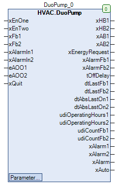

DuoPump (FB)¶
FUNCTION_BLOCK DuoPump
Short Description¶
Redundant control of two similar circulation pumps with anti-lock functionAdditional functions: Requirements for power generation, manual override, pump overrun, operating hours counter, operation monitoringTypical application: Redundant control of a double pump in one heating circuit
Portrayal¶

Interfaces¶
Inputs¶
Name Datatype
Range
Init-Value
Functional Description
xEnOne BOOL Requirement of the lead pump
xEnTwo BOOL Requirement of the lead and follower pump
xFb1 BOOL Operating message of the circulation pump 1
xFb2 BOOL Operating message of the circulation pump 2
xAlarmIn1 BOOL failure message of the circulation pump 1
xAlarmIn2 BOOL failure message of the circulation pump 2
eAOO1 HVACTYPES.eManBin HVACTYPES.eManBin.Auto, HVACTYPES.eManBin.ManOff, HVACTYPES.eManBin.ManOn HVACTYPES.eManBin.Auto Operating mode of manual override - Hardware cirulation pump 1
eAOO2 HVACTYPES.eManBin HVACTYPES.eManBin.Auto, HVACTYPES.eManBin.ManOff, HVACTYPES.eManBin.ManOn HVACTYPES.eManBin.Auto Operating mode of manual override - Hardware cirulation pump 2
xQuit BOOL FALSE Resetting the alarm message of the operational monitoring
Outputs¶
Name Datatype
Range
Init-Value
Functional Description
xHB1 BOOL Release - cirulation pump 1 after manual override
xHB2 BOOL Release - cirulation pump 2 after manual override
xAB1 BOOL Release - cirulation pump 1 before manual override
xAB2 BOOL Release - cirulation pump 2 before manual override
xEnergyRequest BOOL Power generation requirements
xAlarmFb1 BOOL Alarm message - Operation monitoring - Circulation pump 1
xAlarmFb2 BOOL Alarm message - Operation monitoring - Circulation pump 2
tOffDelay TIME Remaining shut-off time of the circulation pump
dtLastFb1 DATE_AND_TIME Date / time of the last operation of the circulation pump 1
dtLastFb2 DATE_AND_TIME Date / time of the last operation of the circulation pump 2
dtAbsLastOn1 DATE_AND_TIME Date / time of the last anti-lock operation of the circulation pump 1
dtAbsLastOn2 DATE_AND_TIME Date / time of the last anti-lock operation of the circulation pump 2
udiOperatingHours1 UDINT Operating hours of the circulation pump 1
udiOperatingHours2 UDINT Operating hours of the circulation pump 2
udiCountFb1 UDINT Number of activations of the circulating pump 1
udiCountFb2 UDINT Number of activations of the circulating pump 2
xAlarm1 BOOL Collective alarm - Circulation pump 1
xAlarm2 BOOL Collective alarm - Circulation pump 2
xAlarm BOOL collective alarm
xAuto BOOL Collective signal Automatic operation
Setpoints / Parameters¶
Name Datatype
Range
Init-Value
Functional Description
eManModeB1 eMANBIN eMANBIN.Auto, eMANBIN.ManOff, eMANBIN.ManOn eMANBIN.Auto Manual override mode for the circulation pump 1
eManModeB2 eMANBIN eMANBIN.Auto, eMANBIN.ManOff, eMANBIN.ManOn eMANBIN.Auto Manual override mode for the circulation pump 2
udiOffDelay UDINT 0 to 600s
60s Follow-up time of the circulation pumps
eOffDelayTimeBase eTime eTime.Second, eTime.Minute, eTime.Hour eTime.Second Scaling of the follow-up time ( seconds / minutes / hours )
eAbsDay eDoW eDoW.Monday bis eDoW.Sunday eDoW.Monday Weekday of the anti-lock operation
todAbsStartTime TOD 00:00:00 - 23:59:59 o’clock
08:00:00 o’clock
Time point of anti-lock operation
tAbsTime UDINT 0 to 3600s
120s Duration of anti-lock operation
xFbControl BOOL TRUE Release of the operation monitoring
udiFbControlTime UDINT 0 to 300s
60s Duration of operation monitoring
eModeRedundance eOpModeRedundance eOpModeRedundance.Auto, eOpModeRedundance.ForceComponent1, eOpModeRedundance.ForceComponent2 eOpModeRedundance.Auto Redundancy mode
Functional Description¶
General¶
Prerequisite for using the DuoPump function block
Redundant control¶
Enable - circulation pump 1 before manual override xAB1.¶
Redundant control
xAlarm1 Follow-up period
anti-lock module
xAB1 Notes
X TRUE X X FALSE Shutdown enabled via collective alarm
FALSE X FALSE FALSE FALSE Disabling via redundant control
TRUE X FALSE FALSE TRUE Release via redundant control
X X TRUE X TRUE Follow-up operation
X X X TRUE TRUE anti-lock mode
Enable - Circulation pump 2 before manual override xAB2.¶
Redundant control
xAlarm2 Follow-up period
anti-lock module
xAB2 Notes
X TRUE X X FALSE Shutdown enabled via collective alarm
FALSE X FALSE FALSE FALSE Disabling via redundant control
TRUE X FALSE FALSE TRUE Release via redundant control
X X TRUE X TRUE Follow-up operation
X X X TRUE TRUE anti-lock mode
enable - circulation pump 1 after manual override xHB1.¶
xAB1 eMANBIN xHB1 Notes
FALSE eMANBIN.Auto FALSE Manual override module in automatic mode
TRUE eMANBIN.Auto TRUE Manual override module in automatic mode
X eMANBIN.ManOn TRUE Manual override module in manual mode On
X eMANBIN.ManOff FALSE Manual override module in manual mode Off
Enable - Circulation pump 2 after manual override xHB2.¶
xAB2 eMANBIN xHB2 Notes
FALSE eMANBIN.Auto FALSE Manual override module in automatic mode
TRUE eMANBIN.Auto TRUE Manual override module in automatic mode
X eMANBIN.ManOn TRUE Manual override module in manual mode On
X eMANBIN.ManOff FALSE Manual override module in manual mode Off
operating messages xFb1 and xFb2¶
Alarm messages xAlarmIn1 and xAlarmIn2¶
Resetting the alarm signal of the operational monitoring systems xQuit¶
Requirement - Power generation xEnergyRequest¶
Follow-up period¶
anti-lock modules¶
Collective alarm - Circulation pump 1 xAlarm1¶
Collective message - Circulation pump 2 xAlarm2¶
xAlarm collective alarm¶
Operating hours counter - circulation pump 1¶
Operating hours counter - circulation pump 2¶
Write access to the counter readings
Operation monitoring - Circulation pump 1¶
Operation monitoring - Circulation pump 2¶
Collective message automatic mode xAuto¶
Visualization¶
Codesys¶
- InOut:
Scope Name Type Initial Comment Input xEnOne BOOL Requirement of the lead pump
xEnTwo BOOL Requirement of the lead and follower pump
xFb1 BOOL Operating message of the circulation pump 1
xFb2 BOOL Operating message of the circulation pump 2
xAlarmIn1 BOOL failure message of the circulation pump 1
xAlarmIn2 BOOL failure message of the circulation pump 2
eAOO1 eManBin HVACTYPES.eManBin.Auto Operating mode of manual override - Hardware cirulation pump 1
eAOO2 eManBin HVACTYPES.eManBin.Auto Operating mode of manual override - Hardware cirulation pump 2
xQuit BOOL FALSE Resetting the alarm message of the operational monitoring
Output xHB1 BOOL Release - cirulation pump 1 after manual override
xHB2 BOOL Release - cirulation pump 2 after manual override
xAB1 BOOL Release - cirulation pump 1 before manual override
xAB2 BOOL Release - cirulation pump 2 before manual override
xEnergyRequest BOOL Power generation requirements
xAlarmFb1 BOOL Alarm message - Operation monitoring - Circulation pump 1
xAlarmFb2 BOOL Alarm message - Operation monitoring - Circulation pump 2
tOffDelay TIME Remaining shut-off time of the circulation pump
dtLastFb1 DT Date / time of the last operation of the circulation pump 1
dtLastFb2 DT Date / time of the last operation of the circulation pump 2
dtAbsLastOn1 DT Date / time of the last anti-lock operation of the circulation pump 1
dtAbsLastOn2 DT Date / time of the last anti-lock operation of the circulation pump 2
udiOperatingHours1 UDINT Operating hours of the circulation pump 1
udiOperatingHours2 UDINT Operating hours of the circulation pump 2
udiCountFb1 UDINT Number of activations of the circulating pump 1
udiCountFb2 UDINT Number of activations of the circulating pump 2
xAlarm1 BOOL Collective alarm - Circulation pump 1
xAlarm2 BOOL Collective alarm - Circulation pump 2
xAlarm BOOL collective alarm
xAuto BOOL Collective signal Automatic operation
Input eModeRedundance eOpModeRedundance eOpModeRedundance.Auto Redundance Modus udiFbControlTime UDINT 60 Duration of operation monitoring
xFbControl BOOL TRUE Release of the operation monitoring
tAbsTime UDINT 120 Duration of anti-lock operation
todAbsStartTime TOD TIME_OF_DAY#8:0 Time point of anti-lock operation
eAbsDay eDoW eDow.Monday Weekday of the anti-lock operation
eOffDelayTimeBase eTime eTime.Second Scaling of the follow-up time ( seconds / minutes / hours )
udiOffDelay UDINT 60 Follow-up period of the circulation pump
eManModeB2 eMANBIN eMANBIN.Auto Manual override mode for the circulation pump 2
eManModeB1 eMANBIN eMANBIN.Auto Manual override mode for the circulation pump 1